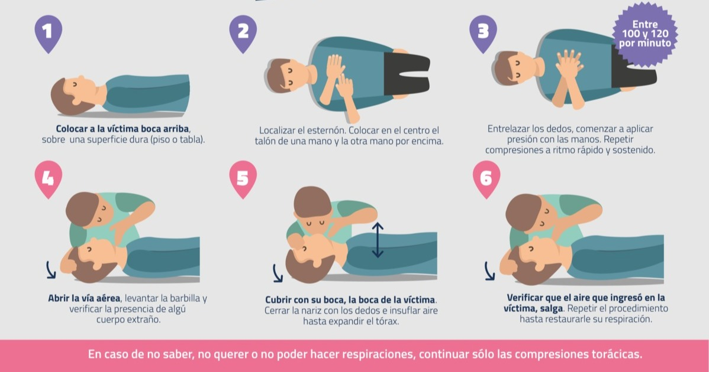
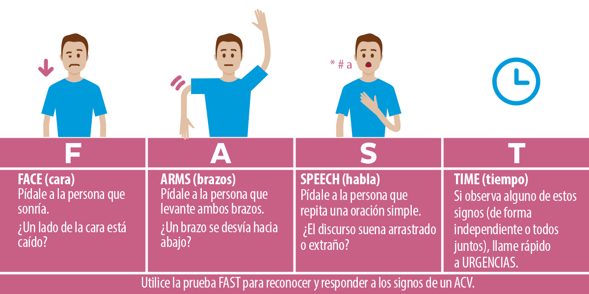
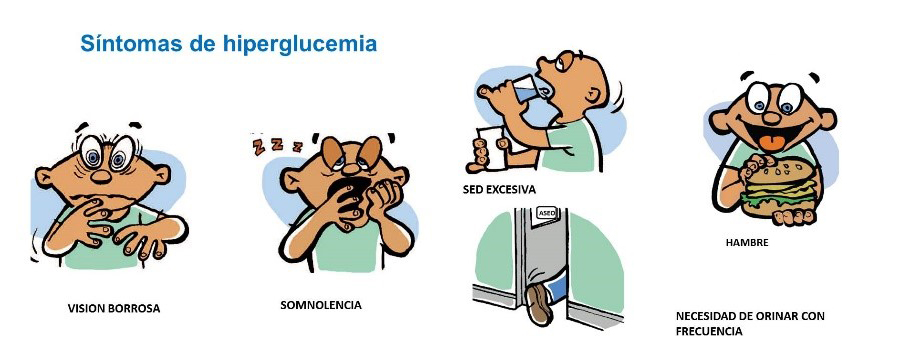
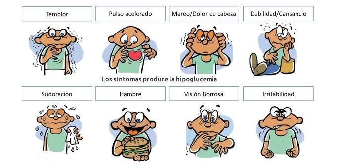
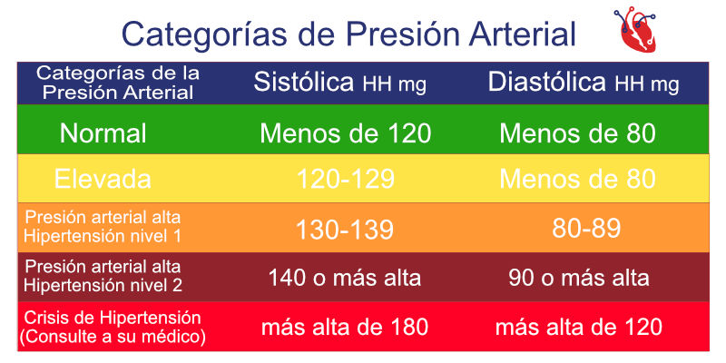
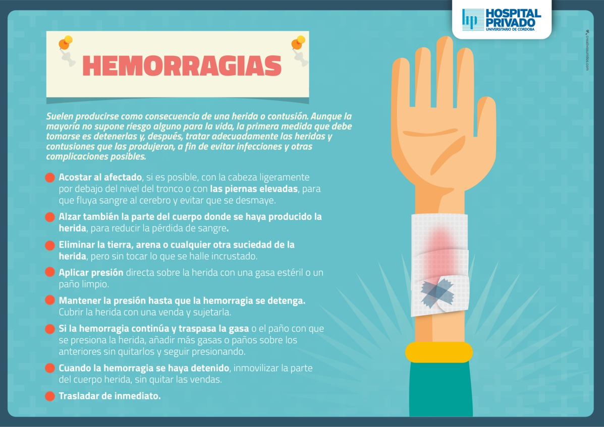
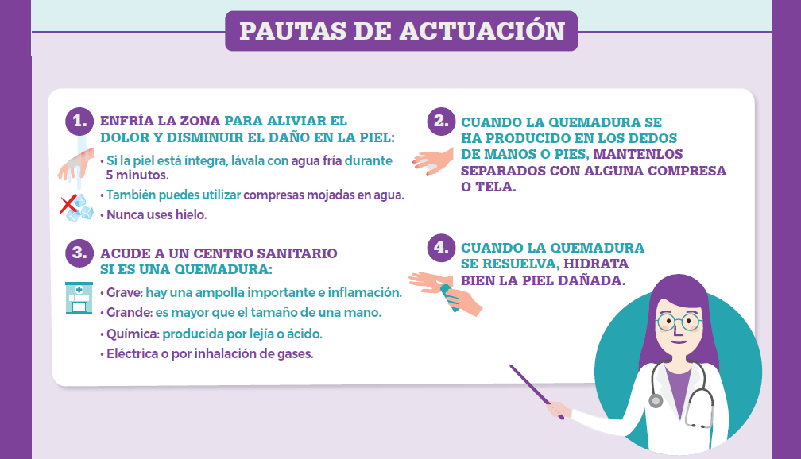
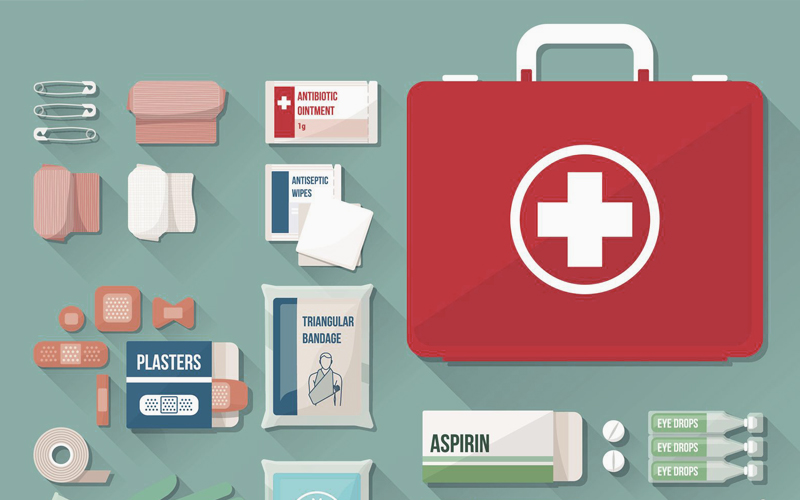

Guía de Primeros Auxilios
Ahogamiento
Si una persona se está ahogando en el agua, sácala de forma segura si es posible. Si la persona está inconsciente y no respira, comienza de inmediato con la reanimación cardiopulmonar (RCP) si estás capacitado. Si la persona está consciente y tose, pero tiene dificultad para respirar, anímala a toser y llama a emergencias.
Ataques Cerebrovasculares (ACV)
Reconoce los signos de un ACV con la nemotécnica "FAST" (Cara, Brazos, Habla, Tiempo). Pídele a la persona que sonría (¿tiene un lado caído?), que levante ambos brazos (¿uno cae?), que repita una frase simple (¿suena rara?). Si observas cualquiera de estos signos, llama al 107 (SAME) inmediatamente. Anota la hora de inicio de los síntomas. Mantén a la persona cómoda y en reposo.
Atragantamiento

Si la persona puede toser, anímala a seguir tosiendo. Si no puede toser, hablar o respirar, realiza la Maniobra de Heimlich Párate detrás de la persona, rodea su cintura con tus brazos, haz un puño con una mano y coloca el pulgar sobre el ombligo, justo por encima. Cubre tu puño con la otra mano y realiza compresiones rápidas y ascendentes hasta que el objeto sea expulsado. En bebés, se realizan golpes en la espalda y compresiones en el pecho.
Golpe de Calor

Traslada a la persona a un lugar fresco y sombreado. Quítale la ropa excesiva. Enfría su cuerpo con paños húmedos y fríos en cuello, axilas e ingles. Si está consciente, dale pequeños sorbos de agua fresca. Llama a emergencias (107) inmediatamente, ya que el golpe de calor es una emergencia médica.
Hiperglucemia (Azúcar alto)
La persona puede sentirse sedienta, orinar frecuentemente, tener visión borrosa o náuseas. Si la persona es diabética, ayúdala a tomar su medicación si es el momento. Si los síntomas son graves o la persona se desmaya, llama al 107. No le des azúcar, ya que su nivel ya es alto.
Hipoglucemia (Azúcar bajo)
Los síntomas incluyen temblores, sudoración, mareos, confusión y hambre. Si la persona está consciente, dale algo dulce de acción rápida (jugo, caramelos, gaseosa regular). Si mejora, dale un alimento con carbohidratos complejos (galletas, pan). Si se desmaya o no responde, llama al 107 y colócala en posición lateral de seguridad.
Hipertensión (Presión alta)
Una crisis hipertensiva puede causar dolor de cabeza intenso, visión borrosa, mareos o dificultad para respirar. Si la persona tiene medicación para la presión, ayúdala a tomarla si lo indica su médico. Haz que la persona se siente o se acueste en un lugar tranquilo. Si los síntomas son severos o no mejoran, llama al 107.
Heridas con Hemorragia
Aplica presión directa firme sobre la herida con un paño limpio o gasa estéril. Eleva la parte del cuerpo herida por encima del nivel del corazón si es posible. No quites el paño si se empapa; añade más capas. Si la hemorragia es abundante o no se detiene, busca atención médica de emergencia.
Infarto Cardiaco

Los síntomas incluyen dolor en el pecho que puede extenderse a brazo, cuello o mandíbula, dificultad para respirar, sudoración fría o náuseas. Llama al 107 inmediatamente. Mientras esperas, ayuda a la persona a sentarse en una posición cómoda y afloje cualquier prenda de vestir ajusable. Pregúntele si toma medicamentos para el dolor torácico, como nitroglicerina por una enfermedad cardíaca conocida y ayúdele a tomarlos. Si la persona está inconsciente y no reacciona y no respira o no tiene pulso, llame al número local de emergencias, luego inicie la RCP.
Ingestión de Corrosivos

NO provoques el vómito. Llama al 107 (SAME) o a un centro de toxicología de inmediato. Si la persona está consciente, puedes darle pequeños sorbos de agua o leche para diluir el corrosivo, pero solo si no tiene dificultad para tragar. Mantén el envase del producto a mano para informar a los profesionales.
Quemaduras
Enfría la quemadura inmediatamente con agua fría del grifo (no helada) durante al menos 10-20 minutos. Cubre la quemadura suavemente con un paño limpio y seco o una gasa estéril. No rompas las ampollas. Para quemaduras graves (grandes, profundas, en cara, manos, pies, genitales), llama al 107.
Armado del Botiquín de Primeros Auxilios
Un botiquín de primeros auxilios bien equipado es esencial en cualquier hogar o lugar de trabajo. Debe contener lo siguiente:
- Materiales para limpiar y cubrir heridas: gasas estériles de varios tamaños, vendas elásticas, esparadrapo o cinta adhesiva, apósitos adhesivos (curitas), suero fisiológico o solución salina, alcohol o toallitas antisépticas.
- Herramientas: tijeras de punta roma, pinzas, termómetro, guantes desechables.
- Medicamentos básicos (consulta a un profesional para dosis): analgésicos (paracetamol, ibuprofeno), antiácidos, antihistamínicos (para alergias leves), algún antiinflamatorio tópico.
- Otros: algodón, protector solar, repelente de insectos, mascarilla para RCP (si estás capacitado), lista de números de emergencia.
Guarda el botiquín en un lugar fresco, seco y de fácil acceso, pero fuera del alcance de los niños. Revisa su contenido periódicamente para reemplazar medicamentos caducados o materiales usados.